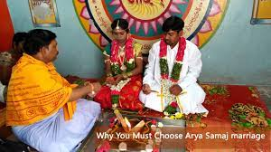
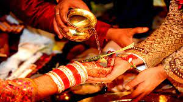
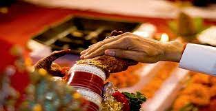
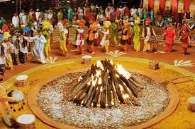
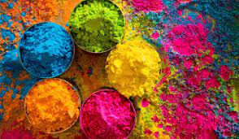
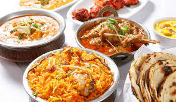
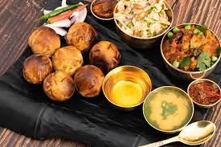
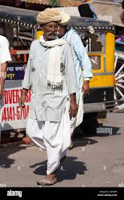

Relegious
The Arya Samaj opposes worship of murtis (images), animal sacrifice, shraddha (rituals on behalf of ancestors), basing caste upon birth rather than upon merit, untouchability, child marriage, pilgrimages, priestly craft, and temple offerings. It upholds the infallibility of the Vedas, the doctrines of karma (the accumulated effect of past deeds) and samsara (the process of death and rebirth), the sanctity of the cow, the importance of the samskaras (individual sacraments), the efficacy of Vedic oblations to the fire, and programs of social reform. It has worked to further female education and intercaste marriage; has built missions, orphanages, and homes for widows; has established a network of schools and colleges; and has undertaken famine relief and medical work. From its beginning it was an important factor in the growth of Indian nationalism. It has been criticized, however, as overly dogmatic and militant and as having exhibited an aggressive intolerance toward both Christianity and Islam.


Before the marriage ceremony starts, as the auspicious time starts drawing near, the priests should make two heaps of a kilo of white washed rice on two wooden seats (pats) of mango wood and arrange them one facing the east and the other at an arm’s length from it facing the west either in the house (or in the pandal below the mortar in the ground). Taking a clean cloth (dupeta) a svastik should be drawn with vermilion (kumkum), etc. on either side of it, in the centre. Then that wedding curtain (antarpat) should be held horizontally by any two persons as a partition such that its selvedged ends face the north. Energy can enter through these ends (or ends of any object). Since pleasant energies are present towards the north the ends are kept in that direction. (Distressing energies are present in the south.) Out of the heaps made earlier the groom should be made to stand on the heap towards the east facing the west and the bride should be made to stand on the heap towards the west facing the east. Then both should be given a mixture of some rice, jaggery and cummin seeds in their palms. This is the last of the individual sanskars (rites) of the bride and groom.
‘Kanya’ which means daughter and ‘daan’ means donation or giving away. ‘Kanyadaan’ or the ‘giving away of the bride’ is a popular Hindu ritual where the father of the bride ‘gives away’ his daughter. However, it is said that the concept of kanyadaan has no mention in the Vedas. So, from where does the concept of kanyadaan came?
FESTIVAL
1.Makar Sankranti
This festival marks the end of the long, cold, winter months and the onset of spring. In ancient times, it was the time when the shift of the sun resulted in longer days. So, it is a celebration of the change of seasons - from a harsher to a milder climate. A sign of hope and positivity. This festival is celebrated in honor of Surya (the Sun God) to pay tribute for the grace of his energy that has enabled life and food on earth. As it is the harvest festival, it is a time of joy, abundance, and celebration in the farming communities, the time when they reap the fruits of their hard labor. It is also a time for peace when families bury the hatchet and get together.
2.HOLI

Holi is a most entertaining festival of India. It is also known as festival of colors as we play with colors at this festival. Holi is a Hindu festival celebrated with lots of joy by the Hindu people all over India as well as abroad where Hindu population is found. Holi falls in the spring season (in Chaitra month) after the winter season. It is one of the happiest religious festivals of the Hindus. It is also celebrated by some non-Hindus to enjoy this festival as a spring festival of love and colors. In this season nature shows its real beauty and everywhere looks very dazzling with pleasant environment.
cusine
A cuisine is a style of cooking characterized by distinctive ingredients, techniques and dishes, and usually associated with a specific culture or geographic region. Regional food preparation techniques, customs, and ingredients combine to enable dishes unique to a region
As the name suggests, the Indian Mughlai cuisine was born during the time Mughals ruled India. It was during the years 1426 to 1857. During their rule that spanned over centuries, the Mughals brought their authentic flavours to the Indian land. There is a wide range of Mughlai cuisine dishes that are worth trying. They are available as medium spicy to high spicy, depending on what you prefer!


Since the Bihari platter is so varied and offers a lot of options, different dishes are consumed for different meals throughout the day. Sattu is usually eaten for breakfast. This flour, made by grinding chickpeas, is one of the quintessential food items of Bihar. In most Bihari households, during summer mornings, sattu is served mixed in water, topped with chopped onion and green chillies, and seasoned with salt. This acts as a high-energy drink and is considered a full breakfast meal. It acts as an effective coolant to beat the summer heat.
CLOTHES
Newly arrived Indian wear for weddings boasts of vibrant colors, intricate embroidery, and modern designs. Women can choose the latest lehengas, sarees, shararas and gowns, while there are regal choices for men and children. These outfits and wedding jewelry cater to the entire family attending an Indian wedding.
Saree
A saree or sari is a long strip of unstitched cloth, which is draped by Indian women – it practically typifies Indian women and showcases the vast diversity of Indian culture as a whole. The word "Sari" is derived from the Sanskrit and the Prakrit (pre-Sanskrit language) root, "Sati", which means, "strip of fabric". Interestingly, the Buddhist Jain works, the Jatakas, describe women's apparel, called the "Sattika", which could well have been similar to the present-day saree. Another fact is that the end of the saree that hangs downward from the shoulder is called the Pallav, Pallu or Anchal. Experts believe that the name came to be during the reign of the Pallavas, the ruling dynasty of ancient Tamilnadu.
Dhoti

Dhoti kurta is the traditional Indian clothing of men. Unlike other dresses, it is an unstitched piece of cloth usually 5 yards long that is tied around the waist and legs. The knot is tied at the waist. Dhoti is known by different names at different places such as Laacha in Punjabi, dhuti in Bangla, veshti in Tamil, panche in Kannada, mundu or veshti in Malayalam, dhotar in Marathi, and pancha in Telugu etc. In Northern parts of India, dhoti is worn along with Kurta and together the attire is called "Dhoti Kurta".
Shirt
Atoms of radioactive elements can split. According to Albert Einstein, mass and energy are interchangeable under certain circumstances. When atoms split, the process is called nuclear fission. In this case, a small amount of mass is converted into energy. Thus the energy released cannot do much damage. However, several subatomic particles called neutrons are also emitted during this process. Each neutron will hit a radioactive element releasing more neutrons in the process. This causes a chain reaction and creates a large amount of energy. This energy is converted into heat which expands uncontrollably causing an explosion. Hence, atoms do not literally explode. They generate energy that can cause explosions.